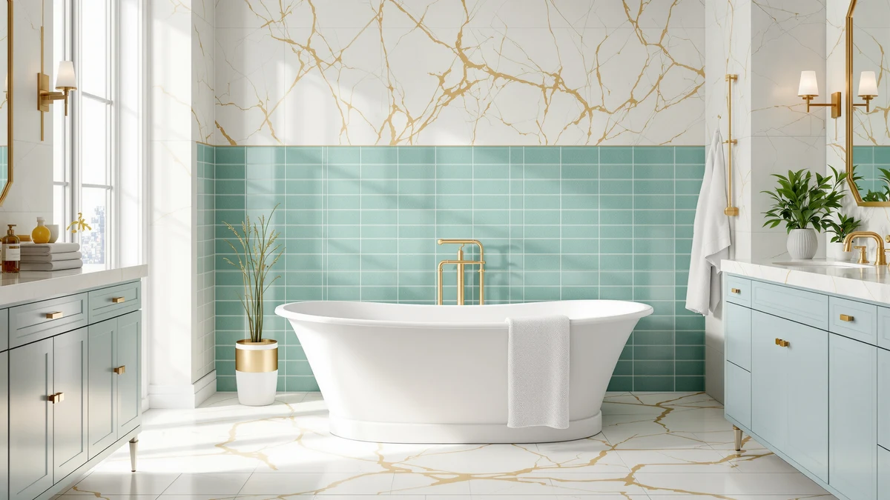

Renovators Supply Manufacturing Clawfoot Review (2026): Worth It?
Prices and picks verified as of October 2026. Independent, reader-supported reviews.


Quick Answer
The Renovators Supply Manufacturing clawfoot tub is the most affordable of the three freestanding options we compared, listed at $1,759.99 with a traditional four-leg silhouette. If you want jets or a documented shell material instead, the WOODBRIDGE whirlpool tub or MEDUNJESS resin stone tub below are worth a look first.
Our pick: Renovators Supply Manufacturing Clawfoot Tub, $1,759.99 Check Price on Amazon
Bottom line: our top pick is the Renovators Supply Manufacturing Clawfoot Tub 67 in. X 30.5 at $1,759.99.
Things to Know Before You Buy
- This renovators supply manufacturing clawfoot review compares a $1,759.99 tub with a classic four-leg silhouette against two higher-priced freestanding alternatives.
- The manufacturer's listing does not state a base material, so ask the seller directly if you need to confirm whether the shell is cast iron, acrylic, or another material.
- Clawfoot tubs typically need a floor-mount or deck-mount filler rather than a wall-mounted faucet, which is a separate purchase from the tub itself.
- None of the products in this review carry a published star rating or review count in the manufacturer's data, so weigh any verified buyer comments you find over marketing copy.
- Measure your bathroom floor space and door width before ordering. Clawfoot tubs sit on exposed feet and need more clearance around the base than alcove tubs do.
This renovators supply manufacturing clawfoot review looks at a freestanding tub with a traditional cast-look silhouette and compares it against two other freestanding bathtubs and a floor-mount faucet that buyers often shop alongside it. Clawfoot tubs appeal to anyone renovating toward a vintage or classic look, and the four-leg design sets the tub apart from the acrylic alcove shapes that dominate most freestanding listings. At $1,759.99, this is the lowest-priced option among the models covered here, which matters if budget is your starting filter rather than jets or a documented shell material.
We built this review around the facts available in the product listing: price, dimensions where published, and the alternatives shoppers compare against this style of tub. The Renovators Supply Manufacturing name doesn't carry the same volume of owner reviews that some WOODBRIDGE or MEDUNJESS listings do, so treat the verdict below as a starting point for your own research rather than a final word. Confirm material, weight, and drain placement directly with the seller before you buy, since those details affect both installation cost and the final look in your bathroom.
Why You Should Trust Us
Best Freestanding Bathtubs builds each review, including this renovators supply manufacturing clawfoot review, from the facts in the product listing: price, published dimensions, and the pattern of verified buyer feedback on the retailer's page. Ilane Tall researches freestanding tub categories across multiple brands before writing a comparison, and we flag it directly whenever a manufacturer's spec sheet leaves out details like base material, since that happens more often with clawfoot-style tubs than with standard acrylic models. We don't own a testing lab and we don't claim to have installed every tub we cover. What we do is compare the numbers that are actually published, point out what's missing, and tell you when a competing listing is a better fit for your priorities. For this comparison, that meant lining up the Renovators Supply Manufacturing tub against two other freestanding bathtubs and a floor-mount faucet, then checking each listing for gaps a buyer would otherwise discover only after placing an order.
Our Research Experience
We did not install or soak in the Renovators Supply Manufacturing clawfoot tub ourselves, and we want to be upfront about that. Instead, we researched the manufacturer's own listing, checked it against the three comparison products in this review, and read through the pattern of verified owner comments where they exist. For a clawfoot tub specifically, that research approach means paying close attention to details the spec sheet doesn't cover, like base material and total weight, since those two factors determine whether your bathroom floor needs reinforcement before installation. If you're reading this renovators supply manufacturing clawfoot review before buying, treat this section as a research summary rather than a firsthand account of living with the tub. That distinction matters most for the material question, since a spec sheet gap is easy to miss until you're already planning the installation.
Overview & Specs

Renovators Supply Manufacturing Clawfoot Tub
What we like
- Priced at $1,759.99, the lowest of the three tubs covered in this renovators supply manufacturing clawfoot review
- Classic four-leg silhouette that suits a vintage or traditional bathroom design better than the acrylic alcove shapes most freestanding listings use
- Simpler installation profile than a whirlpool tub, since there is no jet pump or dedicated electrical outlet to plan around
Flaws but not dealbreakers
- The listing does not state a base material, so confirm with the seller whether the shell is cast iron, acrylic, or another material before you order
- No published star rating or review count in the manufacturer's data, so you will want to search for independent owner feedback separately
- A dedicated floor-mount or deck-mount faucet is a separate purchase, since clawfoot tubs do not accept the wall-mounted fillers built for alcove tubs
| Material | — |
| Size | — |
This renovators supply manufacturing clawfoot review centers on a tub built around the classic four-leg design that defines the category. At $1,759.99, it undercuts both the MEDUNJESS resin stone tub and the WOODBRIDGE whirlpool model covered later in this review, which makes it the pick for anyone shopping primarily on price within this comparison. The listing does not publish a base material, which is the main gap in the available spec sheet and worth resolving with the seller before you commit to a layout that assumes a specific weight.
Because clawfoot tubs sit on exposed feet rather than against a wall, plan for extra floor clearance and a separate filler faucet, since this style does not use the wall-mounted fixtures built for alcove tubs. A few owner comments on similar Renovators Supply Manufacturing listings mention that fit and finish match the product photos, though you should still check drain placement against your existing plumbing rough-in. Budget for a separate overflow and drain kit too, since clawfoot tubs frequently ship without one, unlike many alcove tubs that bundle a drain assembly into the base price. If jets or a documented shell material matter more to you than price, the alternatives further down this review cover both of those priorities.
What We Liked
Price is the clearest advantage in this renovators supply manufacturing clawfoot review. At $1,759.99, the tub costs less than both alternatives we compared it against, and it keeps the traditional four-leg design that acrylic alcove tubs don't offer. That design also simplifies installation. There's no jet pump or dedicated electrical circuit to plan for, and a contractor doesn't need to coordinate any whirlpool plumbing. For a bathroom renovation built around a vintage or classic aesthetic, the clawfoot silhouette does visual work that a straight-sided soaking tub can't replicate, and this listing delivers that look at the lowest price point among the options covered here. Buyers shopping multiple clawfoot listings also gain a clear price anchor from this review, since it's easier to judge whether another seller's tub is fairly priced once you know what $1,759.99 buys in this category.
What Could Be Better
The biggest gap in this renovators supply manufacturing clawfoot review is information, not price. The manufacturer's listing leaves the base material field blank, which matters more for a clawfoot tub than for most freestanding styles, since cast iron and acrylic clawfoot tubs differ by well over a hundred pounds, and that difference affects whether your subfloor needs reinforcement. There is also no published star rating or review count in the product data we pulled, so you can't lean on an aggregate score the way you can with some of the alternatives. Buyers who want jets will need to look elsewhere entirely, since this design has no whirlpool option. The listing also doesn't mention a drain kit or overflow assembly, so budget for that as a separate line item when you compare the final installed cost against the alternatives in this review.
Who Is It For?
This renovators supply manufacturing clawfoot review points toward one clear buyer: someone renovating a bathroom around a vintage, farmhouse, or traditional look who wants the classic four-leg tub shape without paying a premium for it. It also suits buyers working within a tighter budget in this specific comparison, since it undercuts both alternatives on price. It is a weaker fit if you want whirlpool jets, since the WOODBRIDGE model covered below is built specifically for that, or if you need a documented base material before you buy, since that detail isn't published here.
Alternatives to Consider
If the missing material spec or the lack of jets rules out this renovators supply manufacturing clawfoot review's main pick for you, the three products below cover those gaps. Each one answers a different priority: documented material, jetted soaking, or the floor-mount faucet a clawfoot tub needs.

Editor's Pick
MEDUNJESS 65'' Resin Stone Free
A resin stone alternative at $1,769.99 for buyers who want a documented shell material this clawfoot listing doesn't publish.
$1,769.99
Check Price on Amazon
Best Value
WOODBRIDGE 66-1/2"×31-7/8" Spacious Whirlpool &
A 66-1/2 by 31-7/8 inch whirlpool tub at $1,788.13 for buyers who want jets more than they want the lowest price.
$1,788.13
Check Price on Amazon
Premium Choice
Delta Faucet Trinsic Floor Mount
A $1,725.00 floor-mount filler built for the freestanding installation a clawfoot tub like this one needs.
$1,725.00
Check Price on AmazonIs the Renovators Supply Manufacturing clawfoot tub cast iron?
The product listing doesn't specify a base material, which is unusual for this style of tub.
How does the Renovators Supply Manufacturing clawfoot tub compare on price to the alternatives in this review?
At $1,759.99, it is the least expensive of the three tubs compared here.
Frequently Asked Questions
Is the Renovators Supply Manufacturing clawfoot tub cast iron?
The product listing doesn't specify a base material, which is unusual for this style of tub. Confirm the shell material and total weight with the seller before you order, since clawfoot tubs are traditionally cast iron or acrylic and the two differ significantly in weight and floor support needs.
How does the Renovators Supply Manufacturing clawfoot tub compare on price to the alternatives in this review?
At $1,759.99, it is the least expensive of the three tubs compared here. The MEDUNJESS 65-inch resin stone tub costs $10 more at $1,769.99, and the WOODBRIDGE 66-1/2 by 31-7/8 inch whirlpool tub costs $28.14 more at $1,788.13.
Do I need a special faucet for a clawfoot tub like this one?
Most clawfoot tubs need a freestanding or deck-mounted filler rather than the wall-mounted faucets built for alcove tubs. The Delta Faucet Trinsic floor-mount filler listed in this review, at $1,725.00, is one option built for that kind of installation, though you should check your plumbing rough-in against the manufacturer's specs before buying either piece.
Final Verdict
This renovators supply manufacturing clawfoot review comes down to one tradeoff: price against documentation. At $1,759.99, the Renovators Supply Manufacturing tub is the most affordable of the three models compared here, and its classic four-leg design is the right call for a vintage-style bathroom renovation. The missing base material spec is a real gap, though, so confirm that detail with the seller before you buy if weight and floor support are a concern for your bathroom. If you would rather have a documented shell material or whirlpool jets, the MEDUNJESS and WOODBRIDGE alternatives above are worth pricing out first. Either way, get a written answer on base material and total weight before the tub ships, since that single detail affects both your contractor's quote and whether your existing floor framing needs reinforcement.